1Qué es CaVeSal® Academy
CaVeSal® Academy es el espacio de formación médica del ecosistema CaVeSal®. Reúne en un solo lugar las guías de la Historia Clínica y de Emergencias Obstétricas, con un buscador común, la bibliografía completa de cada app y acceso directo a la literatura científica y a las guías oficiales.
- 179 guías de la Historia Clínica, en 4 capítulos.
- 192 fichas de Emergencias Obstétricas, en 16 pestañas.
- 8 buscadores de artículos científicos y 19 accesos a guías oficiales.
- Todo en español, inglés y portugués.
2Quién puede entrar y cómo
Academy está incluida sin costo adicional en cualquier versión full de CaVeSal®: Calculadora Prenatal, Historia Clínica o Emergencias Obstétricas.
- Abrí cavesal.app/academy.
- Si ya activaste una versión full en ese dispositivo, entrás directamente.
- Si no, escribí la clave de licencia de tu Calculadora, Historia Clínica o Emergencias y tocá Entrar.
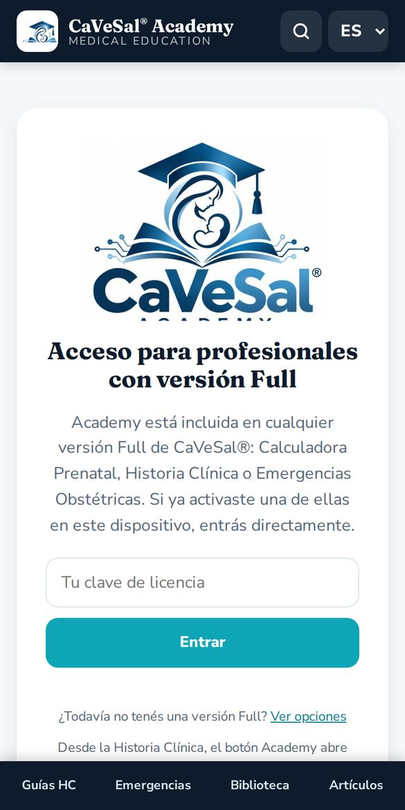
3Entrar desde tus apps
La forma más cómoda es entrar desde la app que ya usás. Academy se abre en una ventana aparte y reconoce tu clave sola.
- Calculadora Prenatal: botón Academy en el encabezado y tarjeta en Acerca.
- Emergencias Obstétricas: logo de Academy en Acerca y en la guía.
- Historia Clínica: botón Academy del menú.
Arriba aparece una barra turquesa “← Volver a…” con el nombre de tu app. Tocala para regresar adonde estabas.
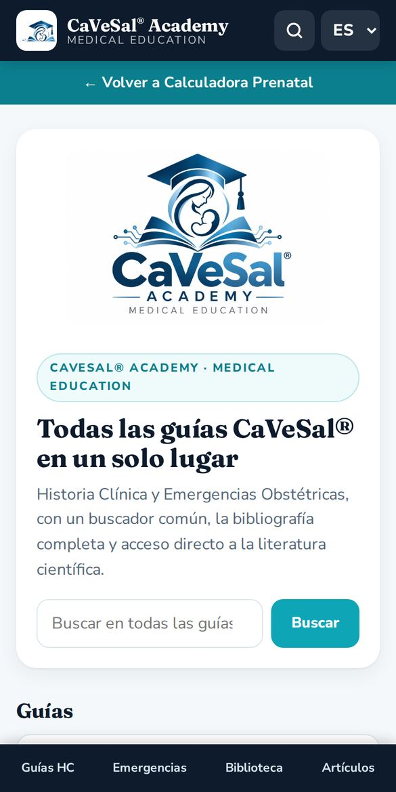
4Inicio, menú e idioma
En el inicio tenés un buscador y tarjetas para cada sección. Abajo, el menú fijo te lleva a Guías HC, Emergencias, Biblioteca y Artículos desde cualquier pantalla.
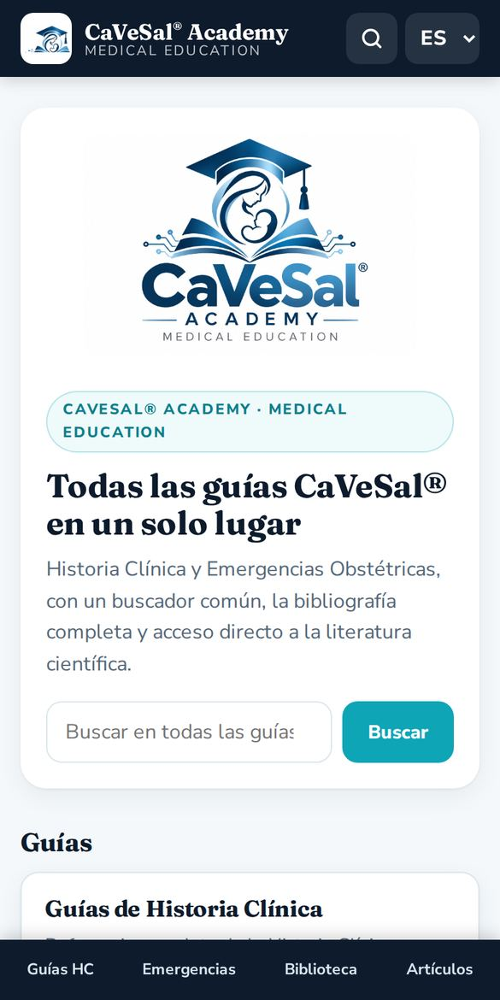
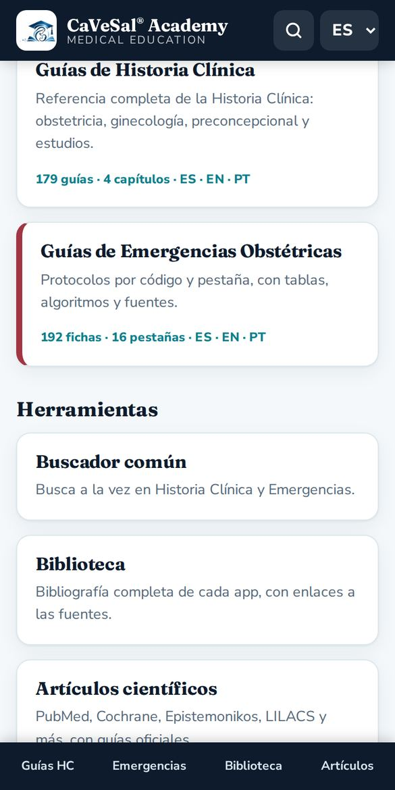
- Arriba a la derecha, la lupa abre el buscador común.
- El selector ES · EN · PT cambia el idioma de toda la interfaz y de las guías. Academy recuerda tu elección.
5Buscador común
Busca a la vez en todas las guías de la Historia Clínica y de Emergencias.
- Escribí un término clínico (al menos 2 letras), por ejemplo magnesio, HELLP o Bishop.
- Filtrá con Todo, Historia Clínica o Emergencias Obstétricas.
- Tocá un resultado para abrir la guía. El término aparece resaltado.
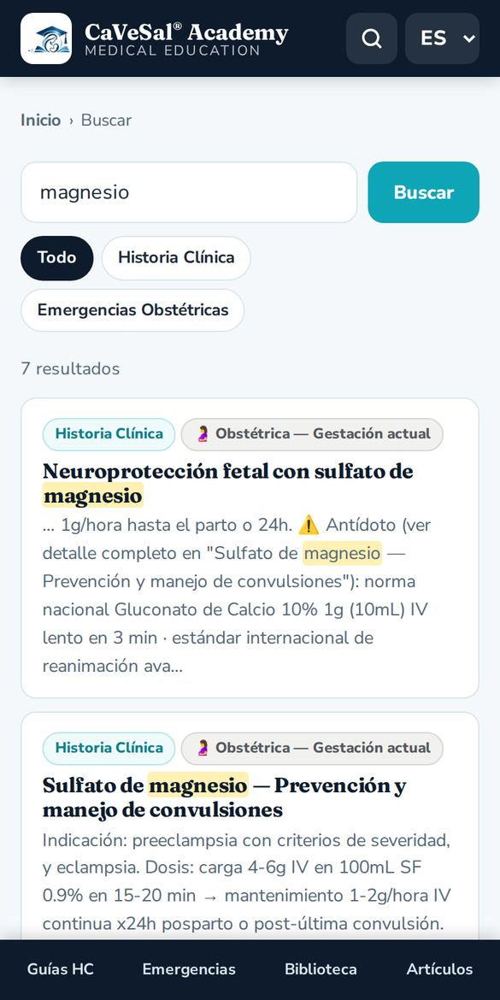
6Guías de Historia Clínica
Son las mismas guías de la Historia Clínica, organizadas en 4 capítulos: Obstétrica, Ginecológica, Preconcepcional y Fertilidad y Estudios.
- Elegí un capítulo.
- Tocá una guía del índice, o usá el selector Ir a… para saltar directo.
- Cada guía muestra su fuente. Al pie, Ver en la app original abre la Historia Clínica.
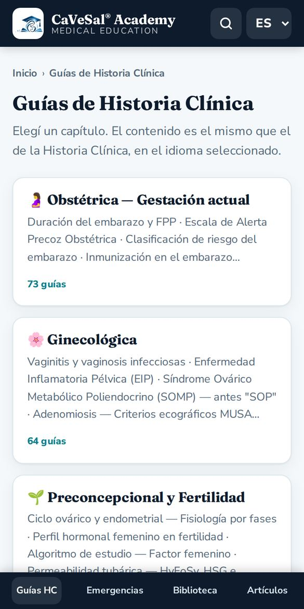
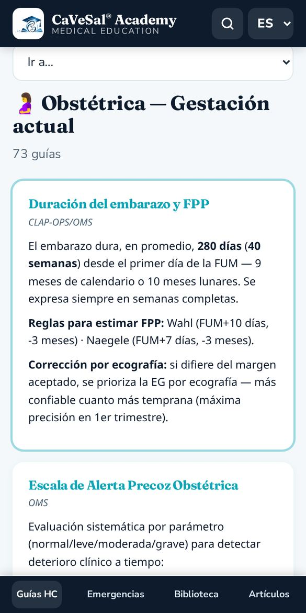
7Guías de Emergencias Obstétricas
Las 16 pestañas de la guía de Emergencias, cada una con el color de su código: Código Rojo (hemorragia), Código Azul THAE, Código Amarillo — Sepsis, Código Azul Obstétrico, tromboprofilaxis, parto y más.
- Elegí una pestaña.
- Abrí una ficha del índice o usá Ir a….
- Las fichas incluyen tablas, algoritmos y fuentes.
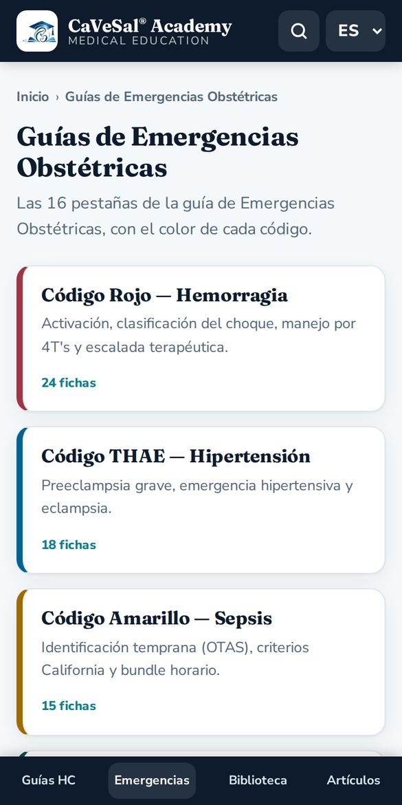
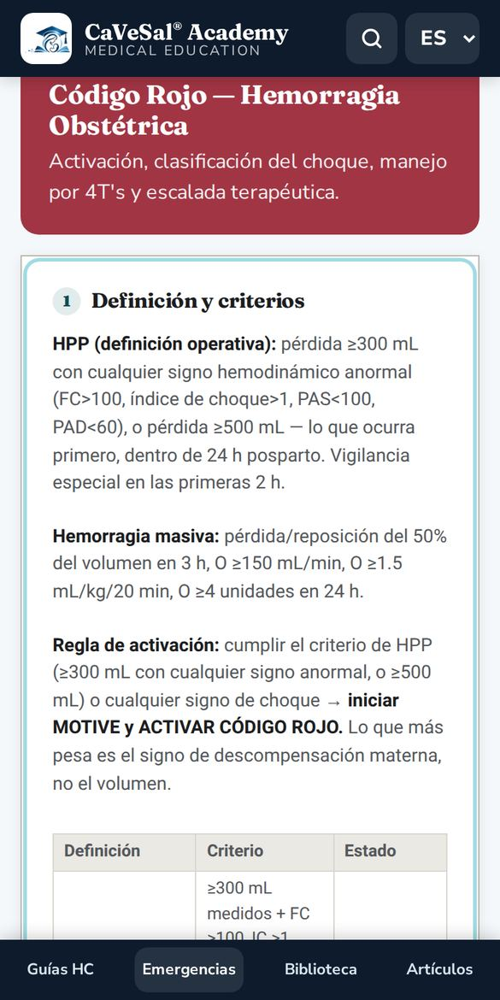
8Biblioteca
La bibliografía completa que respalda cada app: fuentes académicas, guías internacionales y normativas, con enlaces a cada fuente.
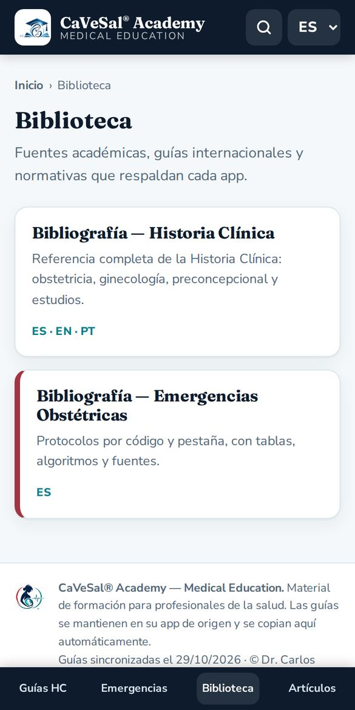
9Artículos científicos y guías oficiales
Escribí el tema una sola vez y elegí dónde buscar. Cada buscador se abre en una pestaña nueva.
- PubMed: literatura biomédica indexada (NLM / NIH).
- Cochrane Library: revisiones sistemáticas.
- Epistemonikos: evidencia de revisiones sistemáticas.
- BVS / LILACS: literatura latinoamericana (OPS).
- Trip Database: guías y evidencia en una sola búsqueda.
- Europe PMC: mucho texto completo gratuito.
- Consensus: respuestas basadas en estudios.
- Google Académico: artículos, tesis, libros y citas.
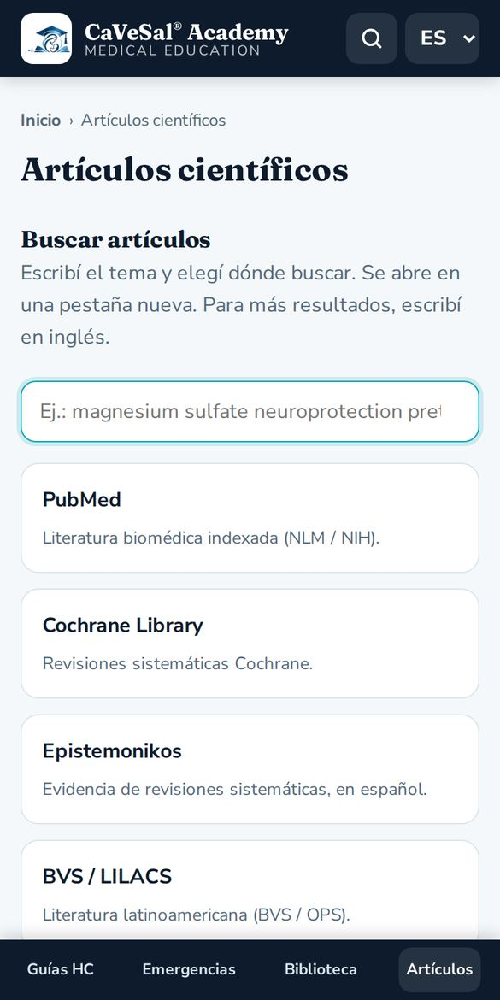
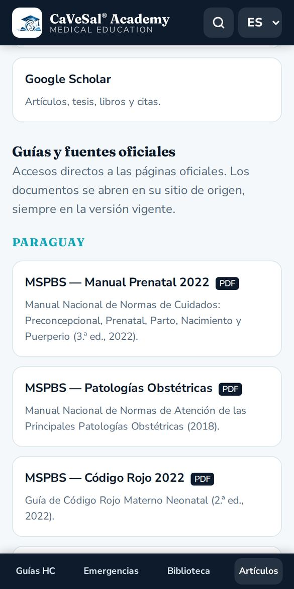
Más abajo, Guías y fuentes oficiales reúne accesos directos agrupados en:
- Paraguay: MSPBS (Manual Nacional Prenatal 2022, Patologías Obstétricas 2018, Código Rojo 2022 y materiales), FPGO y su revista.
- Organismos internacionales: OMS, IRIS de la OMS, OPS/CLAP, FIGO y CDC.
- Sociedades y guías clínicas: NICE, ACOG, RCOG, SMFM y SOGC.
- Medicina fetal y ecografía: ISUOG, Fetal Medicine Foundation y Medicina Fetal Barcelona.
10Instalarla como app y usarla sin internet
- Android: en Chrome, menú ⋮ → Instalar app o Agregar a pantalla principal.
- iPhone / iPad: en Safari, botón Compartir → Agregar a inicio.
- PC: en Chrome o Edge, ícono de instalar en la barra de direcciones.
Las guías que ya abriste quedan guardadas. Sin conexión, Academy muestra la última copia y avisa con una franja “Sin conexión”. Los buscadores de artículos y las guías oficiales necesitan internet.
↑ Volver al índice11Preguntas frecuentes
¿Academy tiene costo?
No. Está incluida en cualquier versión full de la Calculadora Prenatal, la Historia Clínica o Emergencias Obstétricas.
Mi clave no funciona.
Revisá que esté completa y que ya la hayas activado en su app. Si es una clave de CaVeSal® IA, no sirve para Academy. Si tu plan anual venció, aparece el botón Renovar plan.
¿Cada cuánto se actualizan las guías?
Todos los días se copian automáticamente desde su app de origen. La fecha de la última sincronización figura al pie de Academy.
¿Puedo usar Academy en inglés o portugués?
Sí. Elegí EN o PT arriba a la derecha: cambian la interfaz y las guías.
¿Academy reemplaza el criterio clínico?
No. Es material de formación para profesionales de la salud y no sustituye el juicio clínico ni las guías locales.
¿A quién consulto?
Escribinos a drverasalerno@gmail.com.
Manual actualizado: octubre de 2026